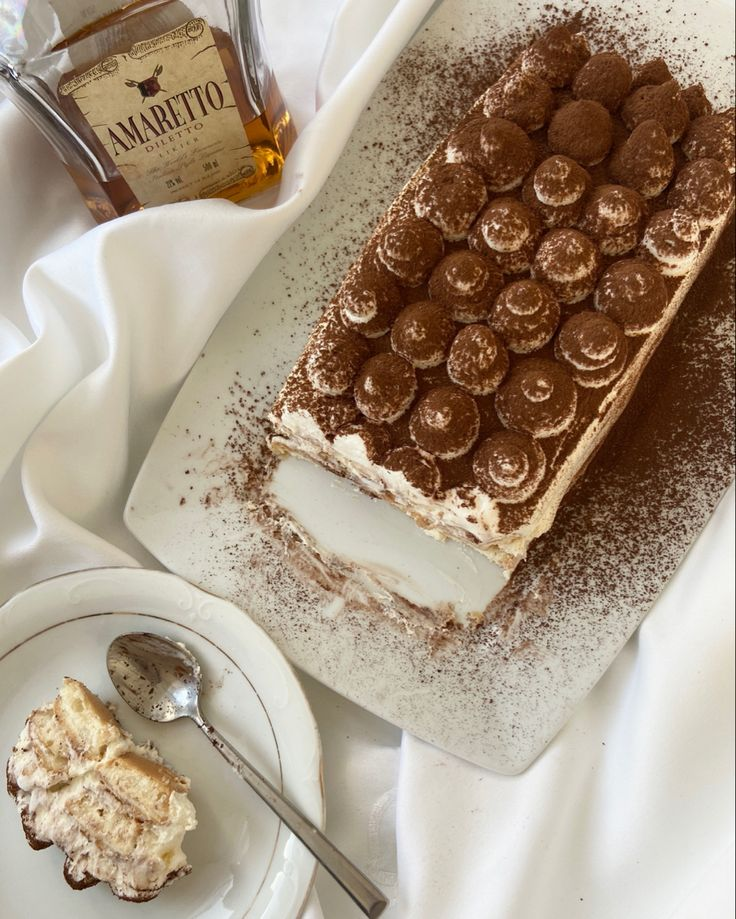

Рецепт Тірамісу
Інгредієнти:
- 250 г сиру маскарпоне
- 15–20 шт. печива савоярді
- 250 мл жирних вершків (не менше 33 %)
- 120 г цукрової пудри
- 200 мл кави еспресо
- 3 ст. л. мигдального лікеру «Амаретто»
- кілька ст. л. какао

Інструкція:
- Першочергово робимо каву — вона має вистигнути до моменту формування тірамісу. Варимо в турці або за допомогою кавоварки. У каву, коли вона вистигне, додаємо амаретто.
- Збиваємо вершки разом із цукровою пудрою до стану густого крему.
- Додаємо маскарпоне, збиваємо все разом на маленькій швидкості міксера.
- Беремо одну велику форму або 5 порційних. Починаємо складати тірамісу. Печиво вмочуємо в каву з лікером, викладаємо у форму, вкриваємо кремом — і так декілька шарів. Останнім шаром має бути крем.
- За допомогою сита рівномірно посипаємо тірамісу какао-порошком.
- Ставимо у холодильник на декілька годин, після чого насолоджуємося італійським десертом із класичним смаком.